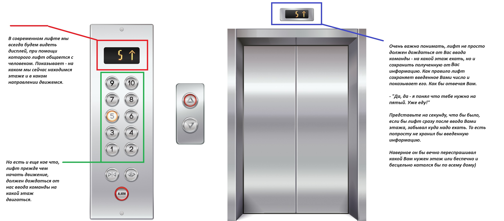

Добро пожаловать в 5 урок
В прошлых уроках мы уже многое узнали про команду print(). Узнали про принцип ее работы, особенности того, что нужно писать в скобочках. И думаю, идея команды в print() нам стала довольно понятна. Команда print() - занимается выводом информации. Но есть ли противоположность? Если есть вывод информации, существует ли команда ввод информации? Да! И сегодня мы ее разберем. Вытаскиваем из коробки "Python" - следующий шарик.
Приятная новость заключается в том, что инструкция ввода данных сильно проще чем инструкция вывода. Но на практике, почему-то, с этой командой у ребят всегда возникают трудности. Давайте начнем с теории и логики работы. В жизни, нам часто приходится не только читать информацию, но и где то ее вводить.
*При банковском переводе - вы вводим сумму и реквизиты
*При покупке снеков у торгового - аппарата мы вводим номер товара
*В лифте мы вводим номер этажа на который нам нужно
*В телефоне мы вводим сообщение, если хотим его кому-то отправить
*Даже для просмотра телевизора нам нужно ввести через пульт номер телеканала
Примеров - очень и очень много! Однако! Один из них можно рассмотреть поподробнее для наглядности!

Итак, какой вывод сделаем прежде, чем пойдем дальше? В жизни существуют множества ситуаций когда нам необходимо не только читать информацию, но и вводить ее куда-то. И конечно же при работе с компьютером, нам тоже часто приходится вводить информацию. Введенная информация - это очень ценная вещь, ее не стоит забывать. Представьте, что Вам дают банковскую карту - с 1000000 рублей на счету. И эти деньги можно потратить на себя. Затем Вам говорят пин-код от карточки. Думаю забыть пин-код в такой ситуации, было крайне неприятно. Или вы встретились с очень важным и дорогим для Вас человеком. Он дал Вам - свой номер телефона, который вы быстро записали на бумажку. Потерять такую бумажку, Вам тоже, наверное, крайне бы не хотелось. Поэтому информацию, особенно важную информацию, всегда нужно стремиться сохранить.
Команда, которая в python отвечает за ввод информации - это команда input(). Разберем эту команду, используя наше с Вами магическое мышление. Тут - как и с командой print() - есть заклинание input и взмах - () волшебной палочки. Но если приглядеться, то само заклинание input - можно разделить на два слова in - в, put - положить.
Вот как оно работает! Сначала программист пишет инструкцию input(). Наш переводчик при этом переведет компьютеру эту команду примерно так, уважаемый компьютер, сейчас нужно дать пользователю возможность что-то ввести с клавиатуры. Компьютер сразу же реагирует. Он создает для Вас на экране мигающий курсор. Выглядеть он будет примерно так:
Этот мигающий курсор - ждет, когда вы наберете на клавиатуре нужную информацию (нужна информация - будет каждый раз разная, потому что в одной программе нам нужно спросить таким образом имя, в другой возраст, в третьей адрес и так далее) и нажмете клавишу Enter.

Как только вы нажали на клавишу Enter. Компьютер и переводчик поймут, что вы закончили ввод информации и можно двигаться дальше к следующей инструкции. Однако в случае написания вот такой инструкции input() - информация никуда не сохраниться. То есть вы сможете ввести информацию, но сразу после ввода она раствориться и исчезнет. Чего нам совершенно бы не хотелось. И теперь мы с вами должны вспомнить две вещи:
1. input - состоит из двух английских слов in - в, put - положить. То есть, сама команда своим именем - намекает нам, что данные нужно куда-то положить.
2. Совсем недавно узнали, что информацию можно складывать в коробочки-переменные, для этого нужно только написать имя коробочки и после знака равно определить, что положить в коробочку. x = ?
Конечно же, думаю вы и сами уже догадались, что можно соединить эти две вещи и получить x = input(). Что дословно - может быть переведено нашим переводчиком - "Уважаемый компьютер, сейчас нужно дать возможность пользователю, что-то ввести с клавиатуры, как только, пользователь закончит вводить информацию и нажмет клавишу Enter --> положи пожалуйста, то что он введет в коробочку-переменную x и сохрани в своей памяти. В реальной жизни при работе за компьютером - подобный механизм работы мы часто встречаем на сайтах-поисковиках (типа google или яндекс).
Причем зачастую в поле запроса, еще можем быть и подсказка. Что-то типа - "введи свой поисковой запрос". Если вы уже посещаете веб-сайты, то уже много раз видели подобное.
Последнее, что нам пока стоит знать о команде input() - это то, что мы тоже можем создавать подсказки. Внутри скобочек команды input() можно разместить подсказку, которая будет помогать пользователю понимать, что именно ему нужно ввести с клавиатуры. Например: name = input("Введи свое имя").
Часто ребята путают input() и print(). Постарайтесь запомнить, что это разные команды, с разными принципами работы. print() - команда которая выводит данные , а input() - команда которая ждет ввода данных. Скобочки команды print() - нужны, что бы указать компьютеру, что именно нам нужно вывести. А скобочки команды input() - могут разместить в себе подсказку.